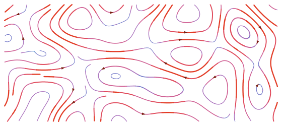

How It Works
Ballistics Toolkit is built on one shared trajectory engine, a small C++ core compiled to WebAssembly that runs in your browser with no backend. Every calculator and simulator calls it, so results stay consistent across the suite.
The engine integrates a bullet's flight step by step under gravity, aerodynamic drag, the local atmosphere and wind, with optional empirical corrections for spin. The result is a single trajectory: drop, drift, velocity and time of flight to any range.
The simulators put that trajectory into a live setting: you read the wind through mirage and flags and shoot at scored F-Class paper targets, or reactive steel that swings when hit. The statistical tools instead fire a load many times over, varying velocity, wind and aim, to show the group and scores it would produce.
The quick version
- Bullet motion is numerically integrated step by step, not solved from one formula.
- Drag uses G1/G7 lookup tables scaled by your ballistic coefficient and the air density.
- Wind enters through the bullet's velocity relative to the air, not a separate drift formula.
- Spin drift and crosswind jump are empirical corrections, not full orientation physics.
- The simulators add a dynamic wind field, mirage, target interaction, and randomized shot dispersion.
What this model is, and is not
It is a modified point-mass trajectory engine: the bullet is treated as a point with mass and a drag profile, integrated through time, with empirical corrections layered on for spin drift and crosswind jump. It is built for education, comparing loads, simulation and planning.
It is not a full 6-degree-of-freedom model of the spinning bullet, and it does not capture every real-world effect. Deliberately left out: Coriolis and Eötvös drift from the Earth's rotation, powder temperature sensitivity (the muzzle velocity you enter is used as-is, so enter a value chronographed at your conditions), bore and rifle imperfections, and your own measurement error in wind, range and atmosphere. Treat the output as a planning estimate, not a guarantee.
On this page
- How a trajectory is computed
- Drag and ballistic coefficient
- Stepping the bullet through time
- Air density and atmosphere
- How wind enters the model
- Spin corrections
- Smooth noise: the building block
- The wind field (curl noise)
- Mirage and scope optics
- Impact detection
- Reactive steel targets
- Simulating groups and scores
- AI, moving targets & remote play
How a trajectory is computed
A flying bullet is pushed by three things: gravity pulling it down, aerodynamic drag opposing its motion through the air, and, because it is spinning, small gyroscopic effects sideways and vertically. The engine sums these into an acceleration and steps the bullet forward through time. The bullet's state is its position \(\mathbf{x}\) and velocity \(\mathbf{v}\):
\[ \frac{d\mathbf{x}}{dt} = \mathbf{v}, \qquad \frac{d\mathbf{v}}{dt} = \mathbf{a} = \mathbf{a}_{\text{drag}} + \mathbf{g} + \mathbf{a}_{\text{spin}}, \qquad \mathbf{g} = (0,\,-9.80665,\,0)\ \tfrac{\text{m}}{\text{s}^2} \]
This is a 3-DOF translational model: position and velocity are integrated, the bullet's orientation is not. The effects that really depend on the spin axis are folded back in as extra accelerations and impulses (see Spin corrections), which is what "modified" point-mass means.
Drag and ballistic coefficient
Drag is the main force slowing the bullet, and it changes sharply with speed, especially near the sound barrier. Rather than one drag number, the engine pairs a standard drag function (a reference curve for a typical bullet shape) with your ballistic coefficient (BC), which says how your bullet compares to that reference. A higher BC means the bullet holds speed better, so less drop and less wind drift.
- G1 is a flat-based reference shape, a good match for older flat-based bullets. It fits modern boat-tail bullets poorly, so no single G1 BC holds across the speed range: the value needed to match the real drag changes with velocity, which is why G1 BCs are often published in velocity bands.
- G7 is a boat-tail reference shape that matches modern long-range boat-tail bullets, giving a more constant BC across the supersonic range. G7 is the engine default.
Each drag function is the standard drag coefficient curve \(C_d\) versus Mach number for its reference shape, the tabulated McCoy / JBM G1 and G7 data, which the engine linearly interpolates. Every step it forms the bullet's Mach number from its air-relative speed and the local speed of sound \(a_{\text{snd}}\), looks up \(C_d\), and scales by air density and the BC:
\[ M = \frac{v_r}{a_{\text{snd}}}, \qquad \mathbf{a}_{\text{drag}} = -\,\frac{C_d(M)\,v_r^{2}}{k\,\text{BC}}\cdot\frac{\rho}{\rho_0}\;\hat{\mathbf{v}}_r, \qquad v_r = \lVert \mathbf{v}-\mathbf{w}\rVert \]Here \(\mathbf{w}\) is the local wind, \(\rho\) the current air density, \(\rho_0 = 1.225\ \text{kg/m}^3\) the reference density, and \(k\) a fixed constant that folds in the standard projectile's reference size (a 1 lb, 1 inch bullet). Because drag is keyed to Mach, the steep transonic drag rise sits at a different airspeed depending on conditions: a warmer day raises the speed of sound, so the bullet meets that spike at a higher fps than on a cold one. Within this point-mass model, once the drag function and BC are fixed, bullet diameter and weight do not separately affect drag; they re-enter later through the spin and stability corrections, where mass, caliber and length matter.
You can see this directly below. Enter a bullet's G1 and G7 BC and the chart draws its actual deceleration under each model (the standard drag curve divided by the BC you give). For a properly matched pair (the same bullet's published G1 and G7 numbers) the two curves nearly coincide over the supersonic band the BCs were fit for, then split apart through the transonic region and out at the speed extremes, where the single-number G1 fit can no longer track the boat-tail's true drag. That gap is why a single G1 number can't follow a boat-tail everywhere: staying accurate with the G1 model takes velocity-banded BCs or a published drag curve, whereas a single G7 number stays far closer across that range. Neither is exact, since a real bullet only approximates either reference shape, but G7 fits modern boat-tails much better, and the bullet's own measured drag curve is closer still.
Stepping the bullet through time
Because drag depends on speed and speed keeps changing, there is no closed-form path; it is computed step by step. The engine uses a second-order Runge–Kutta (RK2) midpoint step. A naive step trusts the slope at the start and overshoots; RK2 instead samples the slope at the middle of the step and uses that for the whole step. That costs a second acceleration evaluation per step (two instead of one), but it is accurate enough to allow much larger steps for the same error, so it is a good trade overall.
\[ \mathbf{v}_{1/2} = \mathbf{v}_0 + \tfrac{1}{2}\mathbf{a}_0\,\Delta t, \qquad \mathbf{a}_{1/2} = \mathbf{a}\!\left(\mathbf{x}_{1/2},\,\mathbf{v}_{1/2},\,t_0+\tfrac{1}{2}\Delta t\right) \] \[ \boxed{\;\mathbf{v}_{1} = \mathbf{v}_0 + \mathbf{a}_{1/2}\,\Delta t, \qquad \mathbf{x}_{1} = \mathbf{x}_0 + \mathbf{v}_{1/2}\,\Delta t\;} \]The simulation marches until the bullet passes the requested distance (or a time cap); values at exact distances are interpolated between the two stored points that bracket them.
Air density and atmosphere
Drag scales with air density, which depends on temperature, altitude and humidity, so the same bullet drops and drifts less in thin mountain air than in cold, dense sea-level air. You enter temperature, altitude and humidity; pressure is derived from the altitude. Density comes from the ideal gas law with a humidity correction (moist air is slightly less dense, the \(0.378\,e\) term):
\[ \rho = \frac{P - 0.378\,e}{R_{\text{air}}\,T}, \qquad R_{\text{air}} \approx 287.05\ \tfrac{\text{J}}{\text{kg}\cdot\text{K}}, \qquad e = \text{RH}\cdot 611.2\,\exp\!\left(\frac{17.67\,T_c}{T_c + 243.5}\right) \]Pressure follows the International Standard Atmosphere power law from altitude \(h\):
\[ P = P_0\left(1 + \frac{L\,h}{T_0}\right)^{-g/(R_{\text{air}} L)}, \qquad P_0 = 101325\ \text{Pa},\; T_0 = 288.15\ \text{K},\; L = -0.0065\ \text{K/m} \]How wind enters the model
Drag acts on the bullet's velocity relative to the air. So wind enters by subtracting it from the bullet's velocity before computing drag: the \(\mathbf{v} - \mathbf{w}\) you already saw in the drag equation. A crosswind tilts the drag vector slightly downwind, and integrated over the flight that becomes lateral drift. There is no separate "wind drift formula"; drift, the small range effect of a head or tail wind, and the interaction of wind with a slowing bullet are all handled by the same integration path.
The model never tracks which way the bullet is pointing: ordinary wind drift falls out of air-relative drag alone. The two effects that do depend on the bullet's orientation, spin drift and the crosswind's vertical jump, are handled separately under Spin corrections.
Calculator-style tools use a single uniform wind across the flight. The simulators sample a full wind field that varies with range, crossrange and time, so the bullet flies through different wind at every point; that field is described below.
Spin corrections
Rifling spins the bullet so it stays pointed forward. Its center of pressure sits ahead of its center of mass, so left to itself the bullet would tumble; the spin is what holds it nose-first.
A spinning bullet also behaves like a gyroscope. Its spin is captured by the angular-momentum vector \(\mathbf{L}\), which lies along the bullet's axis: by the right-hand rule, curl your right fingers the way the bullet is turning and your thumb points along \(\mathbf{L}\). A right-hand twist therefore points \(\mathbf{L}\) forward, downrange; a left-hand twist points it back toward the shooter. The gyroscopic part is that a sideways force on a spinning body is answered a quarter-turn away (a spinning top leans and circles instead of toppling over), and that 90° response is the source of two small deflections that grow with range, spin drift and crosswind jump.
Both are genuine gyroscopic effects, but the engine does not track the bullet's orientation to find them. Instead it uses empirical formulas from Bryan Litz (Applied Ballistics), physics-motivated curves with constants fitted to measured data, adapted to run inside the step-by-step integration.
Gyroscopic stability (Miller)
A stability factor \(S_g\) measures the spin margin, starting from the Miller twist rule and corrected to the actual velocity and air conditions:
\[ S_{g,0} = \frac{30\,m}{t^{2}\,d^{3}\,l\,(1+l^{2})}, \qquad S_g = S_{g,0}\left(\frac{V}{2800}\right)^{1/3}\frac{T_R}{519}\cdot\frac{29.92}{P_{\text{inHg}}} \]with \(m\) in grains, \(d\) in inches, \(l = L/d\) the length in calibers, \(t\) the twist in calibers per turn, \(V\) in fps, \(T_R\) in °Rankine and \(P_{\text{inHg}}\) in inches of mercury. As a rule of thumb \(S_g > 1.5\) is stable. The Miller rule assumes a roughly uniform bullet density, so it is approximate and can under-estimate plastic-tipped bullets; a tip-corrected form fits those better.
Spin drift
As the bullet flies, gravity steadily bends its path downward. The spin makes the bullet's axis gyroscopically stiff, so the nose cannot quite follow that curve: it lags, and rides slightly above the path. The oncoming air then meets the nose at a small angle, and the same quarter-turn response leans that to one side: the nose takes up a small sideways lean, its yaw of repose. Because the nose points a little to the side throughout the flight, the bullet is continually nudged that way, and the drift accumulates with range, to the right for a right-hand twist.
Litz gives an empirical fit for that sideways displacement as a function of time of flight:
\[ \text{SD}(t) = 1.25\,(S_g + 1.2)\;t^{1.83}\quad[\text{inches}] \]A point-mass integrator cannot simply add a displacement on top of its path, so the engine differentiates the law twice and injects it as a sideways acceleration, letting the same RK2 step reproduce the curve:
\[ a_{\text{spin}}(t) = \frac{d^{2}\text{SD}}{dt^{2}} = 1.83\cdot 0.83\,C\,t^{-0.17}, \qquad C = 1.25\,(S_g + 1.2) \]Crosswind aerodynamic jump
A horizontal crosswind shifts the shot vertically, the crosswind jump, through the same gyroscopic response. The wind pushes on the bullet's center of pressure, which sits ahead of its center of mass, and that yaws the nose to the side. But a gyroscope answers a sideways push a quarter-turn away, so most of that yaw is turned into the vertical: the shot lands high or low even though the wind is purely horizontal. This is not the same as wind drift. Drift builds up over the whole flight, while the jump is a single angular kick, delivered as the bullet first meets the wind (at the muzzle for a steady crosswind). Apply a crosswind in the demo below to see it.
Litz gives the size as a sensitivity (roughly 0.3–0.5 MOA per 10 mph at 1000 yd). For a right-hand twist, wind from the right makes the shot land high and wind from the left low; a left-hand twist reverses it:
\[ \text{sens} = 0.01\,S_g - 0.0024\,\frac{L}{d} + 0.032 \quad[\text{MOA per mph}] \]With that understood: each step, the engine compares the crosswind the bullet sees to the previous step and fires an impulse proportional to the change \(\Delta w_\perp\), so a constant wind fires its whole jump at the muzzle while a gust met downrange fires there. That change sets a small jump angle \(\Delta\theta = \text{sens}\cdot\Delta w_\perp\), applied as a kick to the bullet's vertical velocity, where \(\text{hand}=\pm1\) sets the sign from the twist direction:
\[ \Delta v_y = -\,V\,\Delta\theta\cdot \text{hand} \]This assumes the jump is effectively instantaneous, that the muzzle sensitivity still applies downrange, and that successive wind changes add up linearly, all approximations.
See it for yourself
The bullet below spins about its long axis, the angular-momentum vector L, slowed right down so you can read the rifling turning. Use the Effect buttons to switch between the crosswind jump just described and spin drift, its gravity-driven cousin: gravity bends the path, the spinning nose lags above it, and the same quarter-turn response leans that into a steady sideways drift. Flip the twist to reverse the directions (and the rifling), and drag to orbit the view.
Smooth noise: the building block
Two simulator features, the wind field and mirage, are built from the same source of smooth randomness: simplex noise (Ken Perlin's gradient noise). Unlike a table of independent random numbers it is continuous: nearby points return nearby values, with no grid and no sudden jumps, and it is cheap to evaluate and to differentiate.
It works by pinning a random direction (a gradient) at each point of a coarse lattice and smoothly blending their pull: the value climbs toward some neighbors and dips toward others, giving the rolling hills and valleys below. It also varies on a single scale, changing gradually from place to place with no fine jitter, which is what lets it read as a coherent gust pattern rather than random static. One smooth number comes out at every point, and the wind field calls that number the potential \(\psi\).
The wind generator
The simulators do not blow one constant wind down the range; they generate a wind field that swirls, varies along the range, and evolves over time. You can explore it in the Wind Generator tool.
From \(\psi\) to wind
Simplex noise gives a smooth height \(\psi\) over the range. Horizontal wind is the curl of \(\psi\) in the downrange/crossrange plane:
\[ \mathbf{w}_{\text{raw}} = \left(\frac{\partial\psi}{\partial y},\,-\frac{\partial\psi}{\partial x}\right) \]Wind follows the contour lines of \(\psi\), circling its highs and lows rather than running up or down the noise surface. The field is non-diverging: because \(\mathbf{w}_{\text{raw}}\) is a curl, \(\nabla\cdot\mathbf{w}_{\text{raw}} = 0\), so streamlines form closed loops instead of starting or stopping in place. Speed is greatest where \(\psi\) changes fastest.

Post-processing: from curl to the wind you feel
The bullet and mirage sample the post-processed field, not \(\mathbf{w}_{\text{raw}}\). The curl supplies eddy structure and direction; the pipeline below sets how strong each layer blows, how calm or gusty it feels, and how layers add up before they are summed. It reshapes speed along the curl direction only; it never rotates the flow. The steps, in order:
- Curl. Sample \(\psi\) with 3D simplex noise (downrange, crossrange, and time) and estimate its slope with small finite differences. Each layer uses its own stretch along downrange and crossrange (a 10,000-yard layer vs a 100-yard layer), so the same noise feature can represent a broad shift or a tight gust; those stretches are undone when converting the curl back to real range coordinates. The result is a horizontal vector only (crossrange and downrange; no vertical wind from this step).
- Polar split. Convert the curl vector to magnitude and direction. All later steps rescale the speed along that fixed direction; they never rotate the flow or inject unrelated vectors.
- RMS normalization. Divide the magnitude by a constant RMS estimated once at startup from ~1000 random samples of that component. This makes each layer's energy stable before the preset's strength knob is applied.
- Exponent. Raise the normalized magnitude to a power \(p\). Values \(p < 1\) even out the layer toward a steadier average; \(p > 1\) would make it mostly calm with occasional surges (presets usually keep \(p \le 1\)).
- Strength scale. Multiply by the component strength. This sets the layer's nominal speed.
- Sigmoid gate (optional). Some layers pass the magnitude through a logistic gate so the component stays quiet below a threshold and switches on above it, producing distinct gust events rather than always-on turbulence.
- Clip. Cap the magnitude at \(2S\) (twice the component strength) so a single sample cannot run away.
- Sum. Rebuild a Cartesian vector from the final magnitude and the saved direction, map into BTK coordinates \((x=\) crossrange, \(y=0\), \(z=-\) downrange), and add all components at the query point.
Constant-factor steps (RMS normalization and strength scale) keep the field non-diverging. Nonlinear steps (exponent when \(p \ne 1\), sigmoid gate, and clip) break that on purpose: they trade the non-diverging guarantee for calmer averages, sharper gusts, and hard speed limits. Directions still come from the curl throughout, so the finished field remains visibly eddy-like.
Layering, presets, and advection
Several components stack: a broad slow base wind, a medium gusting layer, and fine turbulence, each with its own spatial scales (downrange and crossrange), temporal scale, strength, exponent, and optional gate. Named presets (Zero, Dead, Calm, Moderate, Strong, Extra Strong, Switchy, Turbulent, Gusty, and Shear) are different recipes of those layers. The Moderate preset, for example:
| Layer | Strength | Scale (down × cross) | Time | Exponent | Role |
|---|---|---|---|---|---|
| Base | 3 mph | 10000 × 10000 yd | 10 min | 0.5 | Slow overall condition |
| Gust | 3 mph | 1000 × 1000 yd | 1 min | 0.75 (gated) | Gusts & switches |
| Turbulence | 1 mph | 100 × 100 yd | 0.5 min | 1.0 | Fine jitter |
On top of that, the whole pattern advects: it drifts bodily down the range instead of sitting in place. Each frame the generator averages the composite wind at several random points inside the range, smooths that average with an exponential moving average, and integrates it into a global offset that is subtracted from the sampling coordinates when the curl is evaluated. Eddies therefore travel downrange with the prevailing flow rather than merely morphing in place.
\[ \mathbf{U} \leftarrow (1-\alpha)\,\mathbf{U} + \alpha\,g\,\langle\mathbf{w}\rangle, \qquad \mathbf{o} \mathrel{+}= \mathbf{U}\,\Delta t \]Why not simulate the air for real? True computational fluid dynamics would solve the Navier–Stokes equations on a fine grid, far too expensive to run live in a browser. It would not buy much realism here anyway: a real solve still needs boundary conditions and gusty inflow that are effectively unknown, so the important randomness has to be invented either way. Curl noise plus the shaping pipeline above gives coherent, plausible, cheap eddies directly.
Mirage and scope optics
What mirage is: on a warm day the ground heats the air just above it, and that warm air rises in shifting cells. Warm and cool air bend light by different amounts, so when you look through a scope at a distant target the image wavers and "boils." In wind the boil leans, or "runs," in the wind's direction and flattens as the wind builds, so reading it is one of the main ways shooters judge the wind downrange.
How it is drawn: both simulators fake this with a screen-space post-process, not a ray-traced heat shimmer. The 3D scene is rendered to an off-screen buffer first; a full-screen shader then nudges each pixel (mostly vertically) by simplex noise tied to the live wind field. It is a visual approximation that preserves the cues a shooter reads (run direction, boil rate, strength), not a simulation of light actually bending.
In both sims the boil washes out as wind builds and is gone by about 15 mph. They differ in how many depth layers they use, how they sample the wind field, and whether a separate lens blur runs as well. The pipelines below are the actual render order.
F-Class Sim: two-pass scope render
- Scene pass. Render the range through the scope camera into an intermediate texture (rifle scope on the target, or spotting scope wherever it is aimed).
- Wind sampling. Cast the scope's center ray into the range bounding box. Each of three atmospheric slabs along the line of sight picks a random point in its depth band, samples the wind generator there, and smooths the result with an exponential moving average. Near slabs use a wider world scale in the shader so they read as large soft features; far slabs read as small sharp ones.
- Mirage pass. A full-screen shader sums one 4D simplex-noise sample per slab (three spatial axes plus time), advected by that slab's smoothed wind (crosswind shifts the pattern sideways, vertical wind and a constant heat rise shift it up, headwind churns the downrange axis slowly). The layers add into a vertical UV offset; the scene texture is resampled at the warped coordinates. A chromatic edge tint and an elevation falloff (mirage full when the sight grazes the deck, tapering into the sky above the target) finish the look. Zoom scales intensity, capped so extreme magnification cannot sample absurdly far off-pixel.
There is no depth-of-field blur in F-Class; the soft-near / crisp-far look comes only from the slab scaling. Mirage can be turned off entirely (preset None), which skips the second pass and draws the scene straight to the scope output.
Steel Sim: blur, then mirage
- Scene + depth pass. Render the range into a buffer that carries a depth texture (distance per pixel).
- Focus blur (optional). A thin-lens model turns each pixel's depth and the scope's focal distance into a blur radius (growing with objective diameter and with distance from the focal plane). A separable Gaussian blur runs in two passes, horizontal then vertical, so only the focused range stays sharp.
- Wind sampling. Because the shooter can look anywhere, the scope's focus distance sets how far downrange to sample the wind generator: seven points from 50% to 110% of that distance along the line of sight, averaged into one vector. Perpendicular wind and a constant heat rise advect the noise coordinates over time so the boil drifts and runs.
- Mirage pass. A single-layer shader blends fast and slow 3D simplex noise (not the wind generator's curl field). Each pixel's UV is shifted vertically by the noise amount, then scaled by four attenuations read from the depth buffer and uniforms: distance along the line of sight (near ground barely boils; full strength by the focal distance), magnification (none at wide field of view), focal path length, and total wind speed (fade to zero by ~15 mph). A brightness ripple keyed to noise magnitude adds a subtle smoke-like shading.
- Reticle composite. The warped (and possibly blurred) scene is drawn into the final scope view; the reticle is overlaid on top so it stays crisp and unaffected by mirage or recoil kick on the underlying image.
Blur and mirage are independent effects, but they run in that order: depth-of-field softens the geometry first; mirage then warps the result. The noise displacement itself is never run through the Gaussian blur.
fclass-sim/rendering/mirage.js (4D noise, three slabs, wind-coupled advection). Steel mirage and focus blur live in steel-sim/Scope.js (3D noise mirage, two-pass DOF). Both displace vertically only. The wind field the mirage reads is the same post-processed field the bullet integrates through (see The wind field), so what you see and what the round flies through stay aligned, even though the shimmer shader is a separate approximation from the curl-noise physics.
Impact detection
A trajectory is a list of points; to register a hit the engine finds where the path crosses a target and whether it lands on the plate. It pulls the short segment that spans the target, transforms it into the target's frame (the plate lies at \(z=0\)), solves the crossing, and tests the point against the plate outline, a rectangle (\(|x|\le \tfrac{w}{2},\,|y|\le \tfrac{h}{2}\)) or an ellipse, expanded by the bullet radius so a round that just catches the edge still counts ("line breaks the plate"):
\[ t = \frac{-\,z_{\text{start}}}{z_{\text{end}} - z_{\text{start}}}, \qquad \mathbf{p}_{\text{hit}} = \mathbf{p}_{\text{start}} + t\,(\mathbf{p}_{\text{end}} - \mathbf{p}_{\text{start}}) \]The same geometry scores paper targets: a hit is graded by its radial distance from center against each ring radius, expanded by the bullet radius.
How the crossing is found differs by app. The calculators and the F-Class Sim precompute the whole trajectory, then intersect that finished path with a stationary target. The Steel Sim integrates each bullet live as the game runs, advancing it a frame at a time and testing the short hop against every target's current pose, which is what lets it keep several bullets in flight and hit moving targets. With many plates, a spatial grid culls which ones to test, and the earliest crossing wins. A confirmed hit then draws a decal mark and a particle dust cloud, and in the Steel Sim it kicks off the plate's reaction.
Reactive steel targets
On the steel range a confirmed hit doesn't just register: the plate reacts as a small rigid body, so it swings, twists and rings the way real steel does. Its mass comes from geometry (area × thickness × the density of steel, 7850 kg/m³) and its moment of inertia from the thin-plate formula, so a tall plate and a wide plate of the same weight turn differently.
The hit applies the bullet's momentum, scaled by how square it is (\(\cos^2\) of the impact angle), as an impulse at the contact point. Because that point is usually off the center of mass, it splits into a push and a twist, so a center hit swings the plate and an edge hit spins it:
\[ \Delta\mathbf{v} = \frac{\mathbf{J}}{m}, \qquad \boldsymbol\tau = \mathbf{r}\times\mathbf{J}, \qquad \dot{\boldsymbol\omega} = I^{-1}\boldsymbol\tau \]The plate hangs from chains modeled as stiff one-way springs (they pull but never push), and the whole thing is stepped with semi-implicit Euler under gravity, chain tension and damping until it settles. Orientation is carried as a quaternion (renormalized each step) so a tumbling plate avoids gimbal lock.
Recording the hits in a texture
Each plate keeps its own paint texture, a small RGBA image of its face (front and back stored in the two halves of one image), filled with the paint color to start. When a round lands, the engine maps the impact point onto the plate's local surface coordinates, converts that to a pixel in the texture, and draws a splatter there in C++: a patch of bare metal showing through the paint (blended soft at the edge) ringed with a few ragged spikes. The marks are written straight into the image and they accumulate, so the face builds up a record of every hit, the same paint-and-spatter you read on real steel.
To display it, the renderer reaches that texture as a typed-array view onto WebAssembly memory, so the engine never allocates a copy to hand it over, and then writes those bytes into a shared GPU texture atlas. That last step still copies the pixels into the atlas (and uploads them to the GPU), so it is not strictly zero-copy; the saving is just that reading the texture out of WebAssembly costs no extra allocation.
Simulating groups and scores
Real shooting isn't one perfect shot: muzzle velocity varies, the wind breathes, and no one holds a perfect zero. The Hit Simulator and Target Simulator fire the same shot many times with randomized inputs and study the spread, a Monte Carlo simulation. Every shot runs a full trajectory through the same engine, so second-order effects (a slow round spending longer in the wind, say) fall out on their own. Each shot draws:
| Source | Distribution |
|---|---|
| Muzzle velocity | Gaussian about the nominal MV, with your SD |
| Wind (cross / head / vertical) | Gaussian about the mean wind, each with its own SD |
| Rifle accuracy | Uniform within a circle whose diameter is the group's MOA setting |
| Scope cant | Uniform within ± the cant setting |
Each Gaussian draw is clipped at three standard deviations so rare tail events can't dominate a run. The two apps ask different questions:
- Hit Simulator fires at a circle or rectangle you size and reports dispersion statistics: hit probability, mean radius, CEP, extreme spread.
- Target Simulator fires at competition faces, scoring every shot by ring and running many complete matches to report match-level statistics: average score and X-count, spread and percentiles.
AI opponents, moving targets, and remote play
A few simulator features go beyond a single computed shot and are worth a mention.
AI opponents (F-Class)
In Pair Fire you can set your opponent to the computer. The interesting part is what the difficulty levels actually change: only the AI's wind reading. Every AI shooter fires through the same ballistics engine and the same rifle dispersion you do, holds for both wind drift and crosswind jump, and takes a realistic skill-based pause before each shot. An easy AI misjudges the wind badly, reading it flat and stale with a large percentage error; a hard AI reads it accurately, weights the near-muzzle wind by time of flight, and shoots near-clean. Beating the computer is a wind-reading contest, not a reflex one.
Hunting and moving targets (Steel)
The steel range has an optional hunting mode: prairie dogs that pop up and down, and boars that walk along the range. Because the Steel Sim integrates every bullet live, frame by frame (see Impact detection), moving targets are hit honestly: the bullet and the target both advance in real time, and the hit registers against wherever the target actually is when the round arrives.
Remote Play (F-Class)
The F-Class Sim can stream a live match to a friend, with no server of its own in the loop. It is host-authoritative: the host runs the one true simulation and sends a WebRTC video and audio stream of its view; the guest displays it and sends key and button presses back. A PeerJS broker and public STUN servers are used only to set up the connection, and there is no relay (TURN) in the media path unless one is configured. Because the link is direct, each participant's IP address is visible to the other, so it is meant for people you know.